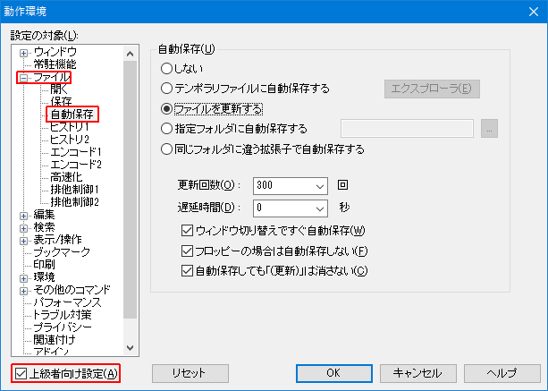

秀丸エディタではファイルを開いている経過時間ではなく、「更新された回数」と「遅延時間」 で自動保存の条件・保存タイミングを設定します。
「自動保存」の設定は、「動作環境」-「ファイル」-「自動保存」から行います。「自動保存」が表示されない場合は、「上級者向け設定」にチェックを入れてください。

自動保存を有効にするには、まず保存場所を指定します。
指定されたフォルダへ、同じファイル名で保存します。
書き込み可能なフォルダを指定してください。「...」ボタンで、ダイアログから選択可能です。
Ver.8.88以降、指定フォルダの指定に環境変数が指定できます(バッチファイルで指定する場合と同じで、%で囲む必要あり)。ただし、先頭部分のみ指定可能です。パスの途中に環境変数の指定は出来ません。
OK: %USERPROFILE%\Documents\Hidemaru\AutoSave
NG: C:\TEMP\%USERNAME%\Hidemaru\AutoSave
以下は、各項目の共通内容になります。
指定された「更新された回数」を越え、「遅延時間」で設定した時間内に入力・操作しない場合、自動保存が行われます。
設定できるのは、1以上です。0(ゼロ)も入力できますが、最小値は 1 なので、1に設定されます。
「更新された回数」というのは、内容が変更された回数という認識で良いでしょう。
例えば、単純に10文字入力すると、10回更新した事になりますが、コピーや貼り付け、やり直し、IMEが有効で日本語入力した場合など、自分が更新したと思われる回数と一致しない場合がありますが、あまり気にしない事です。目安程度に考えましょう。
設定できるのは、0秒以上です。
遅延とありますが、一定時間、入力・編集など操作しない時間です。
つまり、「遅延時間」を設定した場合、連続で操作・編集していると、「更新された回数」をすぎても保存されないので注意が必要です。
編集中の秀丸エディタが非アクティブ状態(他のウィンドウに切り替えた場合や、ダイアログを表示した場合等)になった場合、遅延時間が経過していなくても自動保存します。
無視されるのは「遅延時間」だけなので、「更新された回数」を越えていない場合は、自動保存されません。
以下の2つの設定は、自動保存の設定が「ファイルを更新する」の場合、有効になります。